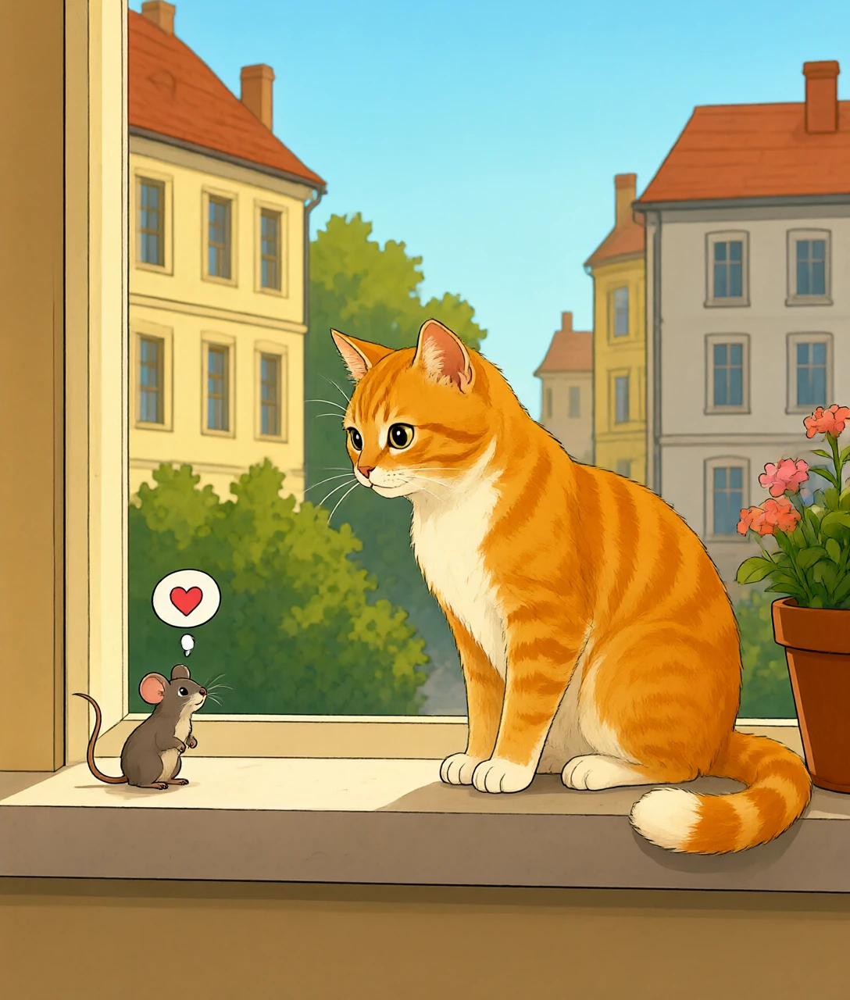
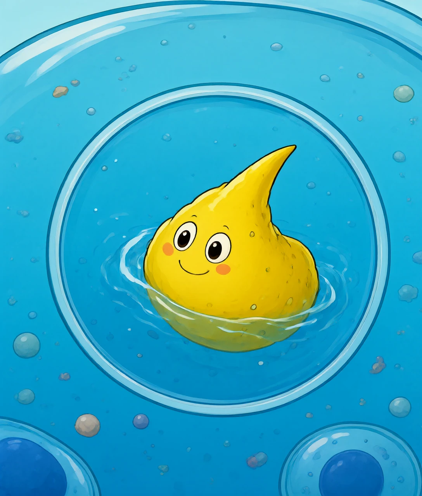
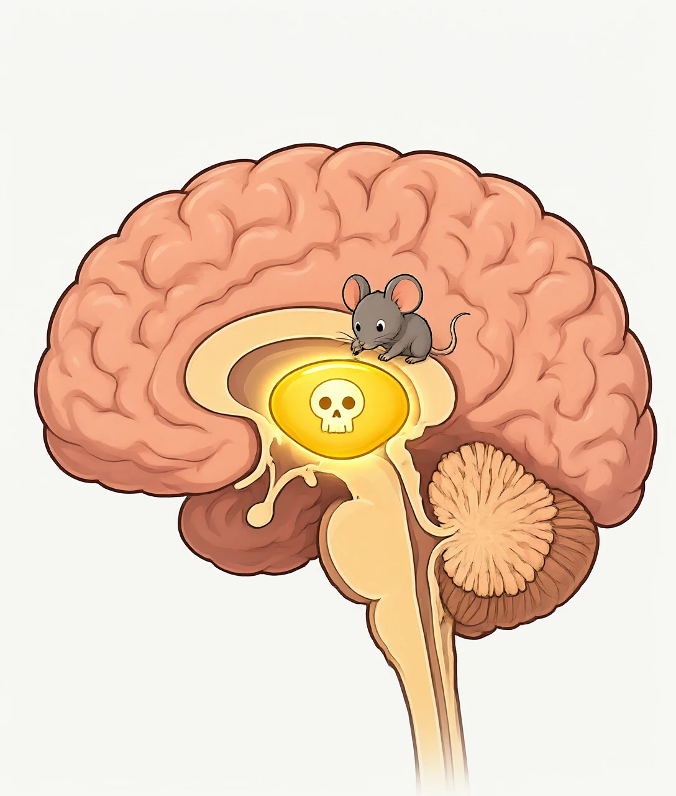
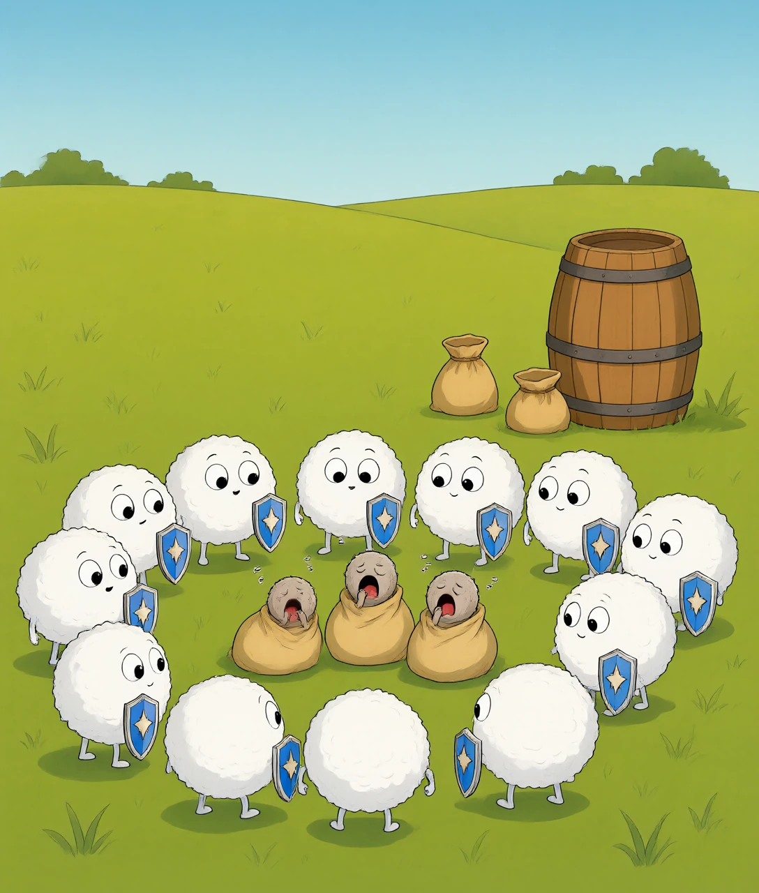
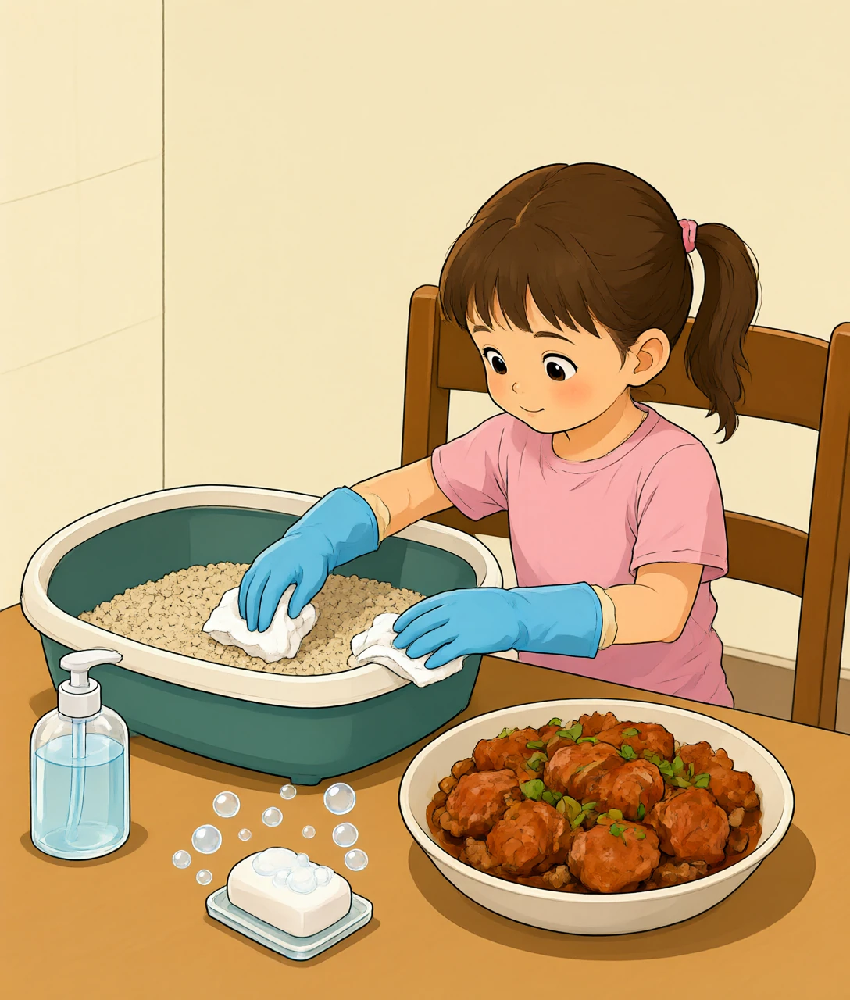

一只连脑子都没有的单细胞小虫，怎么让老鼠爱上猫？
先来看一个科学家做过很多次的实验：把一只老鼠放进场地，然后在角落滴几滴猫尿。
正常的老鼠一闻到猫的味道，立刻吓得浑身发抖，死活不肯靠近那个角落——这是刻在它基因里的保命本领，毕竟几百万年来，闻到猫味还不跑的老鼠，都变成了猫的午餐。
但是，有一批老鼠的表现完全反常：它们不但不跑，反而主动凑到有猫尿的角落打转，好像闻到的不是"天敌警报"，而是"开饭啦"。这些老鼠，最后真的更容易被猫吃掉。
是什么把老鼠的"保命程序"改掉了？科学家在显微镜下找到了答案：这些老鼠的大脑里，挤满了一种只有几个微米大的单细胞小虫——弓形虫（学名叫 Toxoplasma gondii，因为它的形状弯弯的像一张弓，所以叫"弓"形虫）。
一只连脑子、连神经都没有的小虫，居然能改写一只老鼠对猫的恐惧。它到底是怎么做到的？

要理解弓形虫的"操控魔法"，得先弄清一件事：它一辈子最大的心愿是什么？答案是——回到猫的肚子里去生孩子。
这里有一个很奇怪的现象：弓形虫可以感染几百种动物，但全世界只有猫科动物（猫、狮子、老虎）的肠子里，弓形虫才能"结婚生子"，产下一种叫"卵囊"的后代，随猫屎排出。在老鼠、猪、人等其他动物身上，它只能无性繁殖——自己复制自己，永远生不出"有性后代"。
为什么偏偏是猫？科学家还在研究完整原因，但已知的关键在于：弓形虫的繁殖程序是专门为猫科动物的肠道环境写的。猫肠道里的消化液、温度、还有某种尚未完全确认的化学信号，会让弓形虫切换到"有性繁殖模式"。而别的动物的肠道，就像一把不同的锁，弓形虫身上的"钥匙"插进去转不动。
这其实是几百万年共同演化的结果：弓形虫的祖先一直住在猫的祖先体内，它们的繁殖机制和猫科动物的肠道互相磨合，越锁越紧，最后变成了一对"唯一搭档"。
于是问题来了：猫不会飞，也不爱出门远行，弓形虫怎么才能从一只猫"搬家"到另一只猫的肚子里呢？它想出了一个借力打力的绝招——把老鼠变成快递。

现在把前面两章拼起来，一个精妙的逻辑链条出现了：
弓形虫只有在猫肠子里才能有性繁殖 → 要回到猫肠子里，最方便的路就是"被猫吃掉" → 可老鼠天生怕猫，躲得远远的，根本见不到猫的面 → 所以弓形虫需要把老鼠的恐惧关掉，让老鼠主动送上门。
这不是巧合，这是弓形虫几百万年演化打磨出来的"生存策略"。那它具体是怎么关掉恐惧的？
第一步：精准入住。弓形虫随血液流遍全身，但它最喜欢的定居点是大脑、肌肉和眼睛。它在大脑里变成"包囊"——给自己裹上一层坚硬的保护壳，安安静静地住下来。研究发现，包囊特别偏爱杏仁核附近——那正是大脑处理"恐惧"的指挥部。
第二步：改写化学信号。老鼠闻到猫尿时，大脑会分泌一些"恐惧分子"拉响警报。而感染了弓形虫的老鼠，这套报警系统被干扰了：恐惧信号变弱，与此同时与"好奇""探索"相关的神经活动却没有被完全关掉。结果就是——警报哑了，但腿还能跑，老鼠便若无其事地在猫味附近溜达。
第三步（也是最有争议、最有趣的一步）：一些研究发现，被感染的老鼠对猫尿的恐惧消失了，对其他危险（比如开阔地带）的恐惧却还在。也就是说，弓形虫下手非常精准，它不是把老鼠整个"搞坏"，而是只拆掉"怕猫"这一根保险丝。为什么这么精准？科学家推测，弓形虫包囊可能只干扰杏仁核里对"捕食者气味"起反应的那一小群神经元的信号通路，而不是大面积破坏大脑。
看到这里你应该能体会到第一性原理的威力了：看似"玄学"的操控，其实是三步可以讲清楚的因果链——它需要回到猫体内 → 老鼠是唯一的"顺风车" → 所以精准拆除老鼠的怕猫开关。演化没有计划，但无数代下来，凡是"手下留情、只拆这一根保险丝"的弓形虫，都成功繁殖了更多后代。

弓形虫也能感染人类——主要通过两条路：一是吃了没煮熟的肉（猪、羊的肌肉里可能藏着包囊），二是摸了携带卵囊的猫屎或被猫屎污染的土后又把手放进了嘴里。
听起来很吓人？但奇怪的是，绝大多数感染者完全没感觉，甚至不知道自己"收留"过它。为什么？这就得看你的免疫军团是怎么工作的了。
弓形虫进入健康人的身体后，免疫系统立刻识别出这个入侵者，派出一支叫T 细胞的部队，发出"干扰素"信号，命令全身的细胞进入战备状态——具体的做法是：让细胞主动消耗掉自己体内的一种关键氨基酸色氨酸。这一招非常聪明：弓形虫不会自己制造色氨酸，必须从细胞里偷，细胞把"粮仓"清空，弓形虫就饿得没法繁殖了。
饿到动弹不得的弓形虫，只好变身成包囊，就地"冬眠"。它可以休眠几十年，免疫军团也盯防几十年，双方谁也不动谁——这就是为什么健康人感染了也基本没症状：不是弓形虫变善良了，而是被免疫系统按住了。
但有两个例外要特别注意：
① 孕妇。怀孕时，免疫系统为了不攻击胎儿，会刻意调低一部分火力（胎儿一半基因来自爸爸，免疫系统不认识，火力太猛会误伤）。弓形虫趁着防线松动，如果恰好是第一次感染、正处在活跃繁殖期，它就可能穿过胎盘感染胎儿，影响宝宝的大脑和眼睛。所以医生才叮嘱孕妇：别吃生肉、别亲手清理猫砂。
② 免疫力低下的人。比如正在做化疗、器官移植后吃抗排异药的病人——他们的 T 细胞部队被削弱了，休眠的包囊可能趁机"苏醒"重新作乱。
看明白了吗？同一种寄生虫，对不同的人完全是两副面孔——关键变量不是虫子，而是你免疫系统的状态。这就是从机制出发才能看懂的事。

弓形虫的故事讲完了，回头看看这只小虫教给我们的三件事：
第一，演化的策略可以精妙到令人起敬。它没有眼睛，没有大脑，却演化出了一条环环相扣的生存链：钻进老鼠 → 定居杏仁核 → 精准关闭怕猫的开关 → 借猫的嘴回家生娃。每一步单独看都不神奇，连起来看就是一部精心设计的"剧本"。
第二，行为是可以被化学物质改写的。老鼠对猫的恐惧，说到底是大脑里一连串化学信号；弓形虫做的事，就是悄悄拨动其中几个"旋钮"。这提醒我们：我们自己的情绪、偏好、恐惧，同样是大脑化学的产物——所以才更要理解它、而不是被它牵着走。
第三，对付危险靠的是懂机制，不是恐慌。知道它怎么传播（生肉、猫砂），就知道怎么切断（煮熟、洗手、及时铲屎）；知道免疫军团怎么压制它，就明白为什么孕妇要格外小心。知识就是最可靠的护身符。
顺便说一句：科学家正在把弓形虫的"穿越大脑"本领反过来利用——因为它天生能穿过血脑屏障（大脑外那层很难突破的防线），有研究尝试给它装上"送货装置"，让它把治疗大脑疾病的药物精准送进脑子深处。曾经的"黑客"，正在被人类训练成"快递员"。
